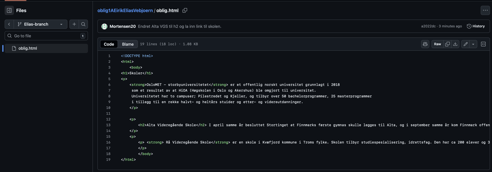
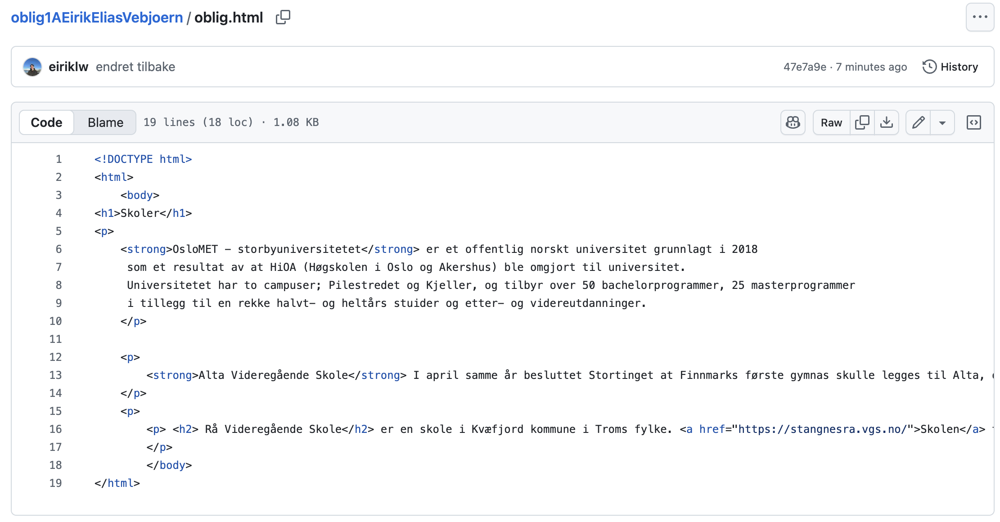
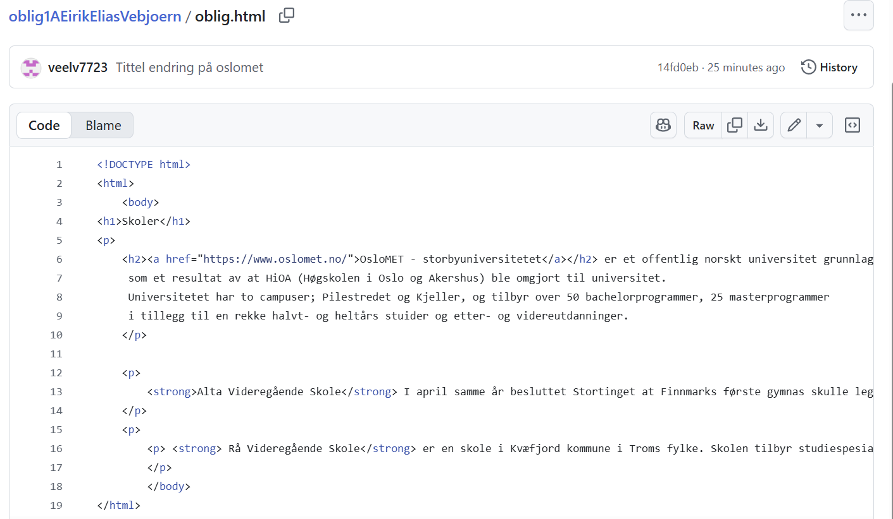

er et offentlig norskt universitet grunnlagt i 2018 som et resultat av at HiOA (Høgskolen i Oslo og Akershus) ble omgjort til universitet. Universitetet har to campuser; Pilestredet og Kjeller, og tilbyr over 50 bachelorprogrammer, 25 masterprogrammer i tillegg til en rekke halvt- og heltårs stuider og etter- og videreutdanninger.
I april samme år besluttet Stortinget at Finnmarks første gymnas skulle legges til Alta, og i september samme år kom Finnmark offentlige gymnas i gang her. I 1968 ble det hetende Alta Gymnas. Da man ikke lengre kunne bruke benevnelsen "gymnas, skiftet skolen i 1980 navn til Holstbakken videregående skole.
er en skole i Kvæfjord kommune i Troms fylke. Skolen tilbyr studiespesialisering, idrettsfag. Den har ca 200 elever og 30 ansatte.
Bilde: Mortensen20
Bilde: eiriklw
Bilde: veelv